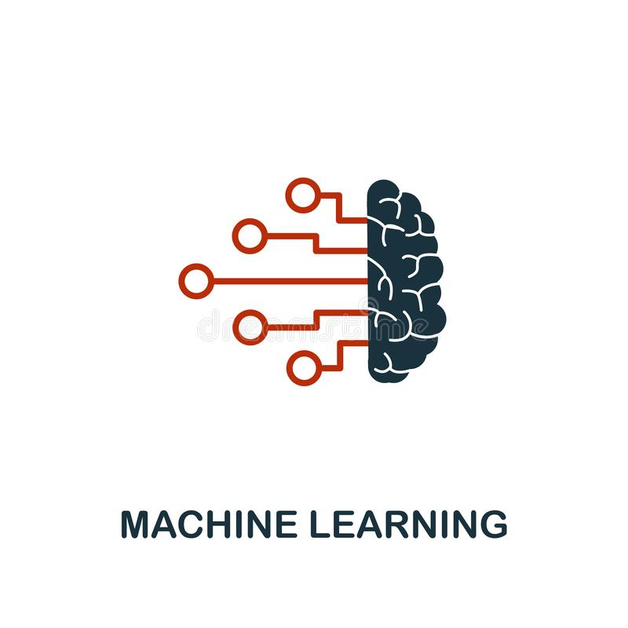

Tecnologia da informação

Python básico para iniciantes na prática
A proposta do curso é aprender, de forma prática, como desenvolver aplicações usando Python. Embora ele comece do básico, o objetivo aqui é chegar em um Python orientado a objetos e uma conexão simples com banco de dados. Na última noite das cinco de realização deste curso, você publicará seu código em seu GitHub e será considerado para sua avaliação neste curso, juntamente como a presença ao vivo e síncrona mínima de 75% (quatro dos cinco encontros). .
Saiba mais

Inteligência artificial e machine learning
Introdução ao Python; Introdução à Inteligência Artificial e Machine Learning.
Saiba mais